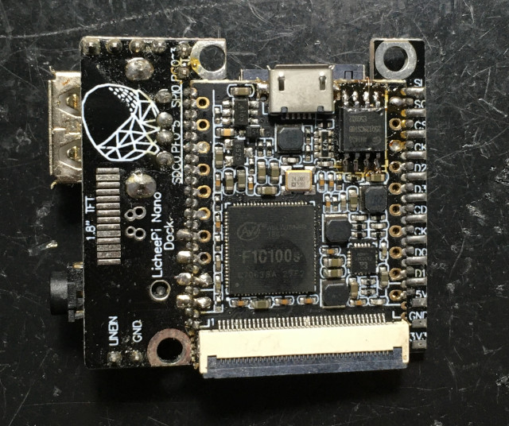
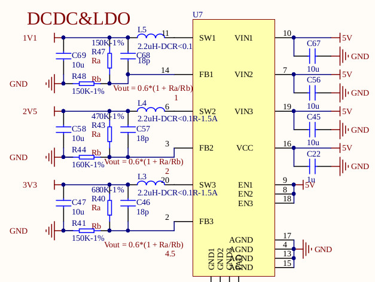
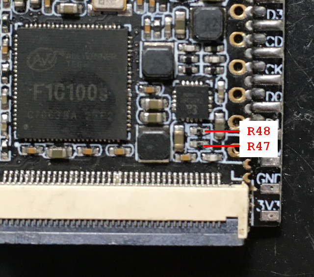
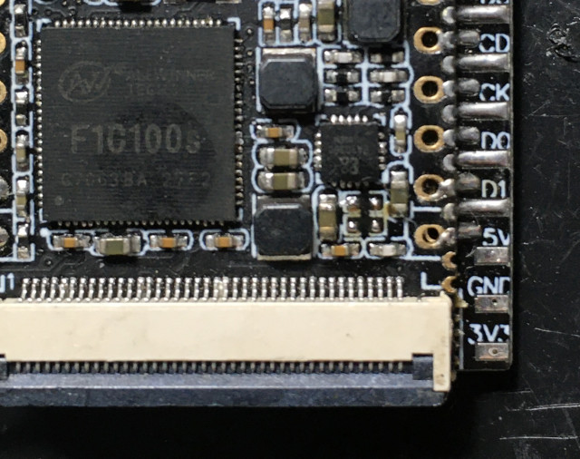
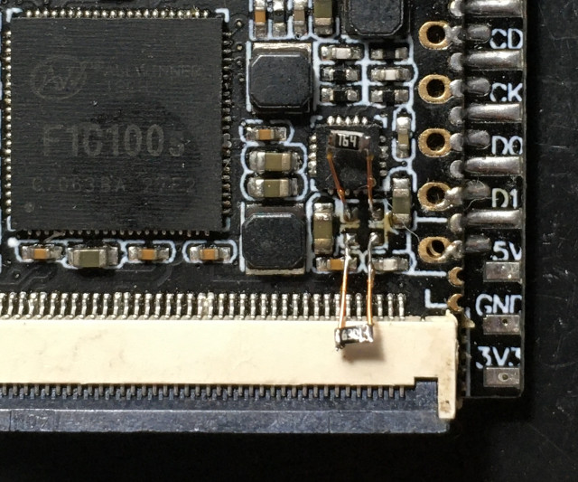
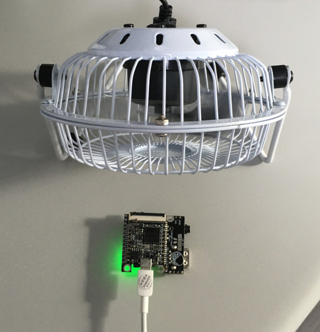
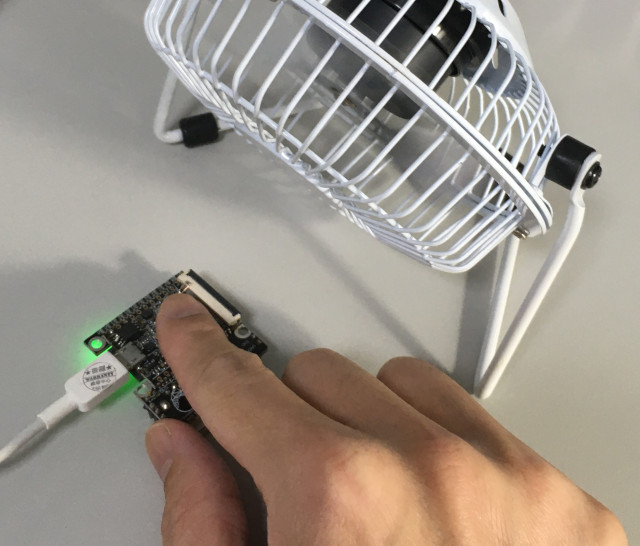
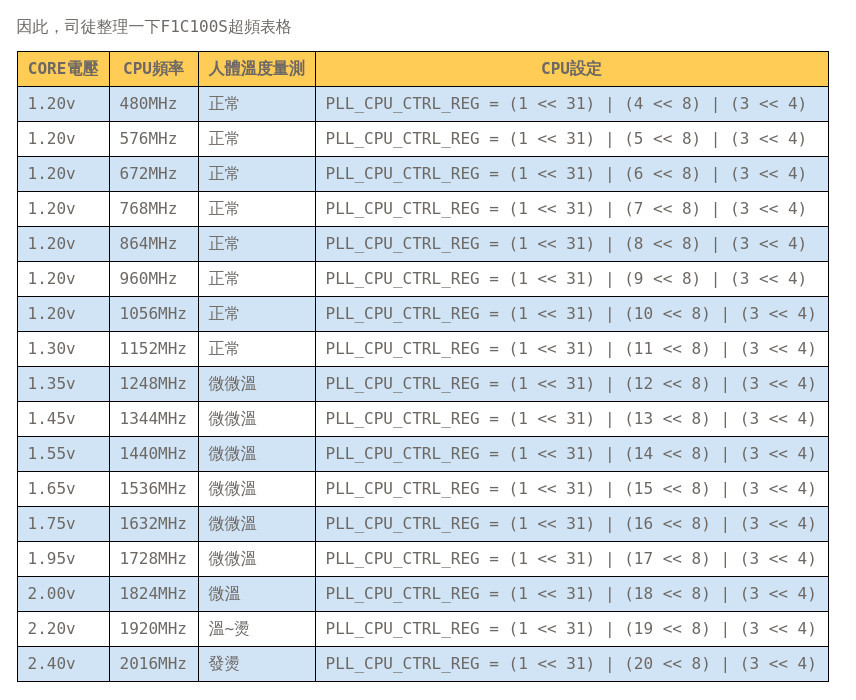

參考資訊：
http://nano.lichee.pro/
https://mangopi.org/mangopi_r
荔枝派Nano







.global _start
.equiv CCU_BASE, 0x01c20000
.equiv GPIO_BASE, 0x01c20800
.equiv PLL_CPU_CTRL_REG, 0x0000
.equiv PLL_PERIPH_CTRL_REG, 0x0028
.equiv AHB_APB_HCLKC_CFG_REG, 0x0054
.equiv BUS_CLK_GATING_REG2, 0x0068
.equiv BUS_SOFT_RST_REG2, 0x02d0
.equiv PE, (0x24 * 4)
.equiv PORT_CFG0, 0x00
.equiv PORT_DATA, 0x10
.arm
.text
_start:
.long 0xea000016
.byte 'e', 'G', 'O', 'N', '.', 'B', 'T', '0'
.long 0, __spl_size
.byte 'S', 'P', 'L', 2
.long 0, 0
.long 0, 0, 0, 0, 0, 0, 0, 0
.long 0, 0, 0, 0, 0, 0, 0, 0
_vector:
b reset
b .
b .
b .
b .
b .
b .
b .
reset:
ldr r4, =CCU_BASE
ldr r1, =(1 << 31) | (19 << 8) | (3 << 4)
str r1, [r4, #PLL_CPU_CTRL_REG]
0:
ldr r1, [r4, #PLL_CPU_CTRL_REG]
tst r1, #(1 << 28)
beq 0b
ldr r0, =GPIO_BASE
ldr r1, =0x10000
str r1, [r0, #(PE + PORT_CFG0)]
0:
eor r1, #0x10
str r1, [r0, #(PE + PORT_DATA)]
ldr r2, =500000
1:
subs r2, #1
bne 1b
b 0b
.end
